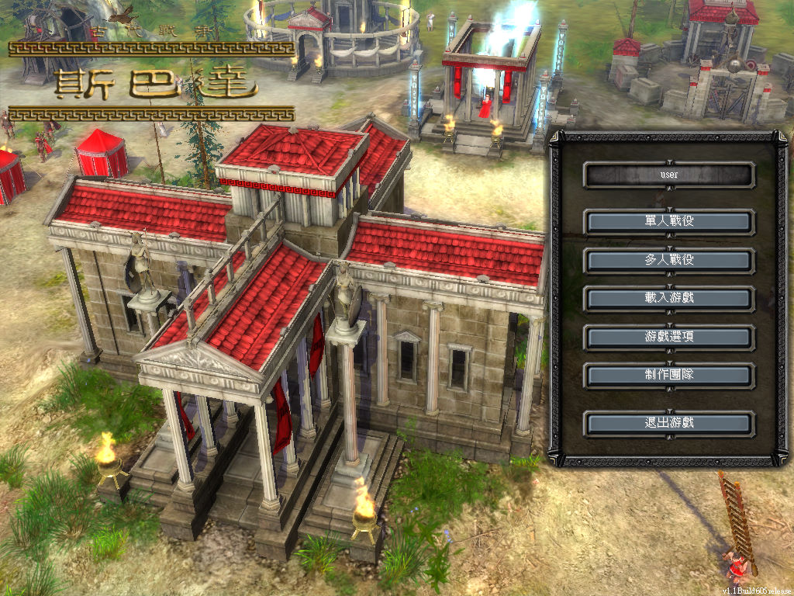
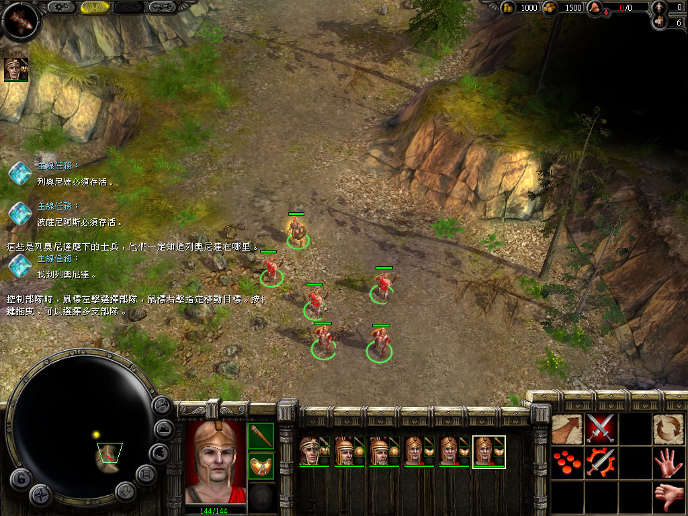

名稱：斯巴達：古代戰爭 (Ancient Wars: Sparta，中文版)
簡介：Gameyus 2005年出品的即時戰略遊戲，由GMX代理發行，2006年由美思捷達中文化並代
理發行 [待補]。


保護：光碟SecuROM 7.31
備註：實際進入遊戲畫面若會出現錯誤訊息而結束，可到Option，選Advanced，將所有High
都調成Normal，再可逐一變更為High，看看是那個選項造成的。
檔案：ch.rar = 中文漢化檔（已免光碟，請執行「HunKing\左賢王中文版.exe」啟用中文）
nocd100.rar = 1.00免光碟